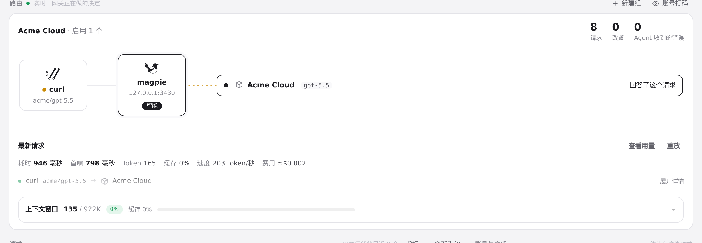
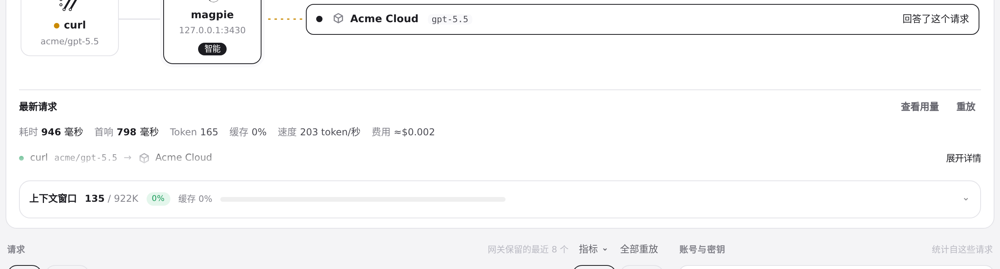
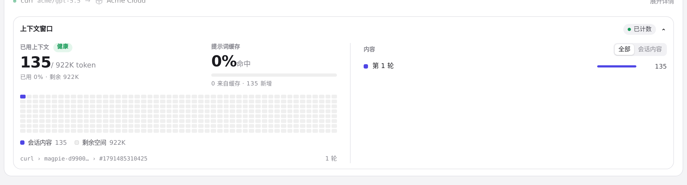
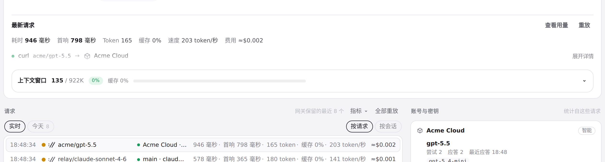
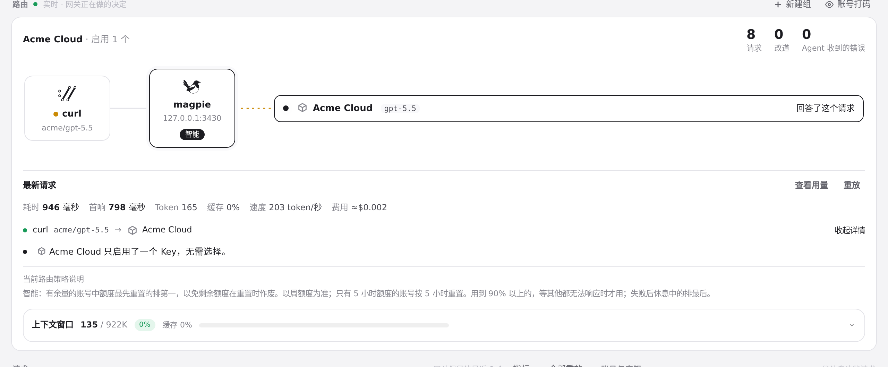
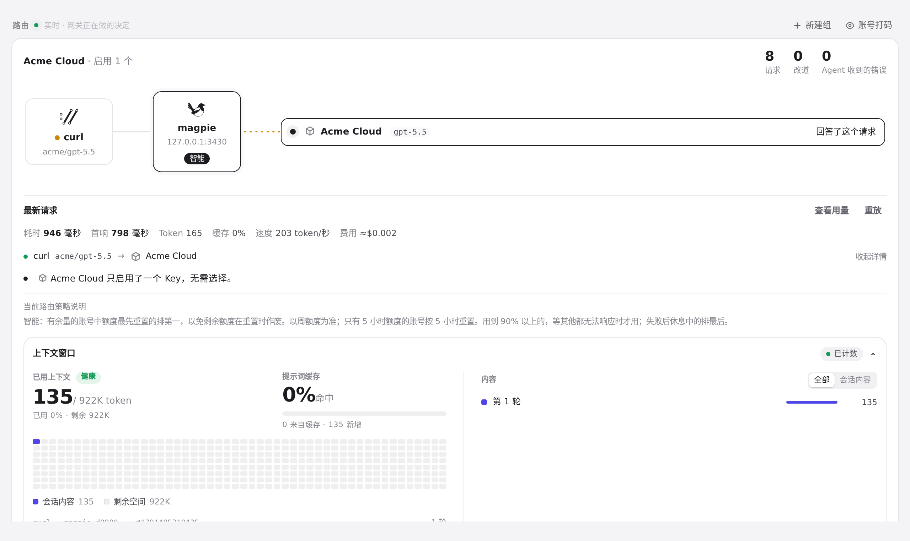

#1354 界面预览
commit c212c56 · 回到 PR · 路由页实时卡片改版：请求详情变成整行可点的「展开详情/收起详情」开关（收起时请求路径缩成一行淡出，展开后才显示决策原因、用途说明与「当前路由策略说明」），上下文窗口改为独立卡片、以可点击标题展示已用/窗口、占比与缓存，展开才构建占用格与内容列表；两处开关各自记住偏好，卡片在 ≥1280px 宽时改为分栏，在 ≥800px 时把上下文概览与内容列表并排。
红线是鼠标走过的轨迹，红色圆环是一次点击；底部文字是这一步在做什么。空格暂停，← → 逐段查看。

请求详情的收起与展开 · 路由页实时卡片：指标在上，请求路径一行，行尾一个动作
请求详情的收起与展开 · 悬停时行尾动作的样式
请求详情的收起与展开 · 展开后：决策原因、用途说明和底部的路由策略说明

请求详情的收起与展开 · 收起后的请求行
上下文窗口的收起与展开 · 上下文卡片收起时的一行标题

上下文窗口的收起与展开 · 展开后的上下文卡片

上下文窗口的收起与展开 · 收起后回到一行

两个开关各自独立 · 详情展开时上下文仍是收起的一行

两个开关各自独立 · 两个开关各自打开后的卡片